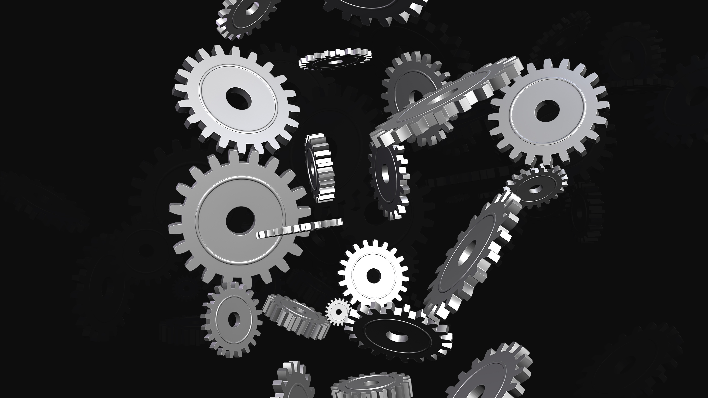
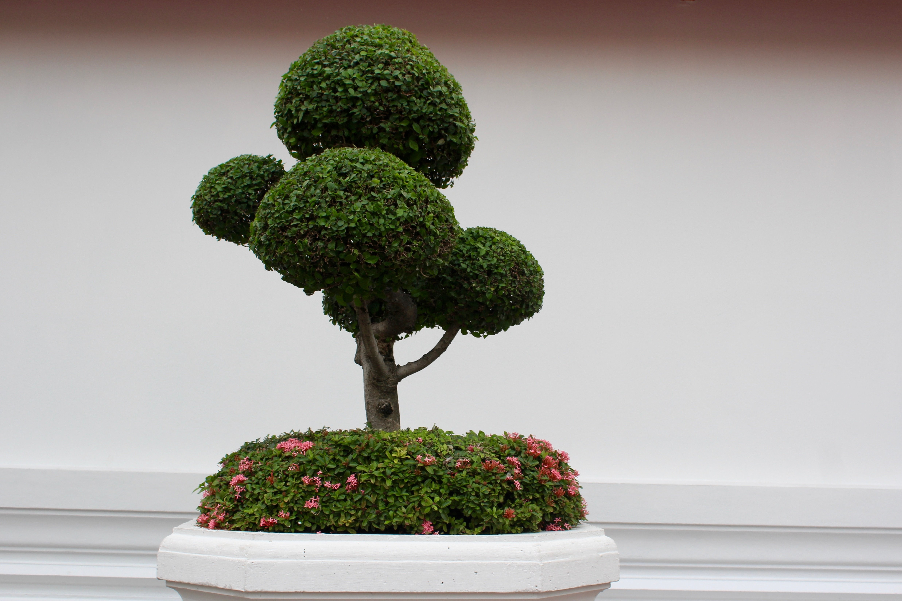

The technology has affected the world in many ways.It has been creating opportunities for individuals throughout the world.It has been helping us to create things and materials not only suitable for development but also for enhancement of personal capabilities.It has been creating a environment for every human to reach their utmost potential whether while exploring the world or themselves.The technology has helped a human to create far more things beyond his/her imagination.It has been helping us explore wonders inside earth and also outsides.It created a way for humans to reach the moon and explore the universe and far way beyond.The growing development in the field of html,javascript and css has been promoting the ability of normal brain to that which can create and invent every possible way out from the traditional way of living.From designing apps for the conveniency of peoples to drastically developing the infrastructures too they have given a huge supports.The discoverance of Artificial Intelligence has enhanced the growth and development pace of the world.As the technologies are extending so are the cognitive abilities of peoples.

Positive impact The technology has created a link from every corner of the world to the other side.It has uplifted the norms,values ,cultures and ethnic identities of peoples throughout the world.Network has been linking every rural areas to the new world.It has been providing opportunities,learning environment,satisfaction towards the curiousity to always learn more and never be deprived of the knowledge.Technology has been helping us to think and innovate something far away from the real world and crowds.It has helped a man to think much out of the world and bring his imagination and creativity to action.It has vastly brought convenience and gradual improvement in the daily lifestyles of peoples.From paying the bills from phone to creating a ecommerce business that could support their daily lifes.
Negative Impacts of the technology in present era has exceeded far more unanimously and has horrified many peoples about sharing their personal data and any other information online. Mostly online business are vulnerable to any kind of attacks and lose their rareness while trying to maintain their pace with the outerworld.The datas of peoples are vastly sold and accessed by third party websites in most cases a huge majority of peoples don't know that their data and information is being sold,surfed and used for personal benefits by the wrong hands.Along with the development in the sector of technology what is lacking is it's security,assurity about keeping the datas of it's users safe.It lacks the integrity to keep peoples assured about the things they share online. .

Impacts of Technology while selling bonsaic plants. While creating our website about Bonsaic plants we were able to learn a lot of new things about ecommerce.While selling bonsaic the technology html css and javascript helped us to create our homepage much more attractive and reflect through the page how we treat our customers,where we import our product from It helped us boost our daily sales as we were able exceed our monthly sales drastically worldwide.The enhancement in the lifestyles of customers and our sellers by knowing more about ecommerce industry.The current trend of B2B marketing we were able to operate through it along with keeping up our pace of business.The AI improved and enhanced the value of our business and created a pleasant environment where we could create a fascinating place for not only business but also create value for the taste and preference of our customers and others who view us about the minimalistic plants.The ideas we used to brainstorm about how an ideal website of ecommerce shall look like for them to connect with us without actually visiting our store we obtained it through the features of javascript functions of sliding images,the pop ups .

Concept of ecommerce in the present era promoted the value culture and prospects of our business.It helped us get through the toughest times of not having enough advertisements to promote our business. We were able to reach our utmost potential and exceed the expectations we had of ourselves .The project overally made us resilient to any kind of future barriers that could possibly occur in the ongoing operating business. We were able to express and convey how badly we want to operate and promote our idea of business in market.We were able to enhance the future prospects of our business more and were able to plan and operate with a proper long term plans only.Moreover,the uncertainties that the future brings in the field of our business we will prepare our best.